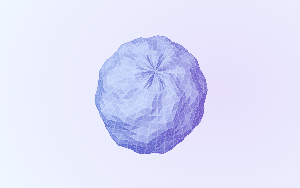
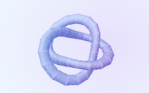
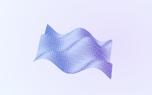

3D Reconstruction
3차원 복원
다시점 영상과 깊이 센서로 물체와 공간의 3차원 형상을 복원합니다.
Research
3차원 복원, 시각화 및 애니메이션을 중심으로 멀티미디어 생성 AI와 멀티모달 처리 기술을 연구합니다.
3D Reconstruction
다시점 영상과 깊이 센서로 물체와 공간의 3차원 형상을 복원합니다.

3D Model Denoising
스캔이나 생성 과정에서 생긴 잡음을 줄이고, 원래의 기하 구조와 디테일을 보존합니다. 3차원 메시의 시각적 품질도 연구합니다.

3D Face Modeling
영상과 센서 데이터에서 얼굴의 형태와 표면 정보를 추정해 개인화된 3차원 모델로 표현합니다.

3D Face Animation
음성, 표정, 동작을 3차원 얼굴 모델에 적용해 자연스러운 디지털 아바타를 생성합니다.

3D Face Tracking
영상에서 시점과 표정이 변해도 얼굴 특징점과 머리의 움직임을 안정적으로 추적합니다.
한국연구재단(교육부) · 2025.09–2028.08